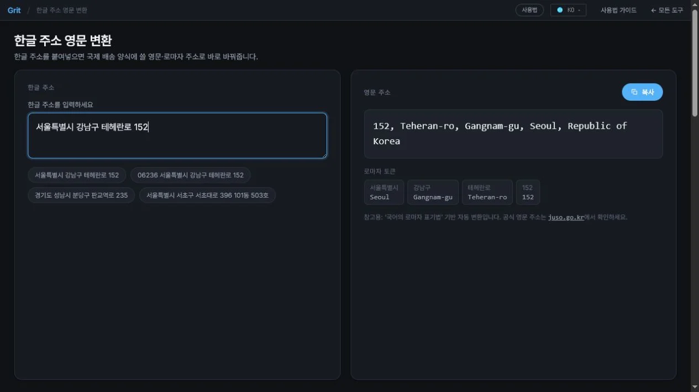

한글 주소 영문 변환
한글 주소를 붙여넣으면 국제 배송 양식에 쓸 영문·로마자 주소로 바로 바꿔줍니다.
한글 주소
영문 주소
로마자 토큰
참고용: ‘국어의 로마자 표기법’ 기반 자동 변환입니다. 공식 영문 주소는 juso.go.kr에서 확인하세요.
한글 주소를 붙여넣으면 국제 배송 양식에 쓸 영문·로마자 주소로 바로 바꿔줍니다.
로마자 토큰
참고용: ‘국어의 로마자 표기법’ 기반 자동 변환입니다. 공식 영문 주소는 juso.go.kr에서 확인하세요.
위 칸에 한글 주소를 붙여넣거나 입력하세요. 예시 칩을 눌러 바로 채울 수도 있습니다.
입력하는 즉시 큰 단위→작은 단위 순서를 뒤집어 영문 주소로 변환합니다. 우편번호는 끝에 붙고 ‘Republic of Korea’가 추가됩니다.
‘복사’ 버튼으로 결과를 클립보드에 담아 배송 양식에 붙여넣으세요. 표기법 기반 참고용이며 공식 영문 주소는 juso.go.kr에서 확인하세요.

해외 직구 반품 주소를 적거나, 아마존·이베이 같은 해외 쇼핑몰에 배송지를 등록하거나, 영문 이력서·명함·논문에 주소를 넣을 때는 한글 주소를 로마자(영문) 표기로 옮겨야 합니다. 이 변환기는 서울특별시 강남구 테헤란로 152 같은 도로명 한글 주소를 붙여넣으면, 국제 우편 양식에 맞는 작은 단위 → 큰 단위 순서의 영문 주소로 바로 바꿔 줍니다.
변환은 국어의 로마자 표기법(문화체육관광부 고시)을 기준으로 한 규칙 기반 자동 처리이며, 입력한 주소는 브라우저 안에서만 로마자로 바뀝니다. 개인 주소를 넣어도 서버로 전송되지 않습니다.
한글 주소는 큰 단위(시·도)부터 작은 단위(번지)까지 적지만, 영문 주소는 그 반대로 작은 단위부터 씁니다. 이 도구는 입력한 토큰의 순서를 뒤집어 영문식으로 재배열하고, 각 지명을 음절 단위로 로마자화합니다.
로 → -ro, 대로 → -daero, 길 → -gil, 구 → -gu, 동 → -dong, 시 → -si, 도 → -do.Seoul, Busan, Gyeonggi-do처럼 널리 쓰이는 고정 표기로 변환합니다.Republic of Korea를 붙입니다.152, 101동 503호처럼 숫자·건물 표기는 그대로 유지되어 배송에 필요한 정보가 빠지지 않습니다.결과 아래에는 각 지명이 어떤 로마자로 바뀌었는지 토큰별로 보여 주므로, 표기가 이상해 보이는 부분만 골라 직접 손볼 수 있습니다. 복사 버튼으로 결과를 클립보드에 담아 배송 양식에 바로 붙여넣으세요.
대표적으로 해외 직구 반품 라벨에 한국 주소를 영문으로 적을 때, 알리·아마존·이베이 등 해외 쇼핑몰의 배송지를 영문으로 등록할 때, 영문 이력서·명함·논문 소속에 주소를 넣을 때, 해외 친구에게 보낼 편지 봉투를 쓸 때 유용합니다. 이런 상황마다 매번 로마자 표기법을 찾아 음절을 하나씩 옮기는 대신, 한글 주소를 그대로 붙여넣어 초안을 얻고 필요한 부분만 다듬는 방식이 훨씬 빠릅니다.
로마자 표기법은 발음을 기준으로 하기 때문에, 실제 공식 영문 주소와 철자가 조금 다를 수 있습니다. 특히 고유명사(도로명·동 이름)는 관행상 굳어진 표기가 따로 있는 경우가 있어 자동 변환 결과와 어긋날 수 있습니다. 예를 들어 같은 소리라도 지역에 따라 다른 철자를 공식으로 쓰기도 하고, 사이시옷·연음·경음화 같은 발음 현상은 규칙만으로 완벽히 반영하기 어렵습니다. 그래서 이 도구의 결과는 배송·기재를 위한 빠른 초안으로 보는 것이 맞습니다. 배송 실패를 막으려면 우편번호를 정확히 넣고, 중요한 우편물이나 서류는 juso.go.kr의 영문주소 검색으로 공식 표기를 한 번 더 확인하는 것을 권합니다. 우편번호는 5자리 번호를 정확히 찾아 함께 적으면 좋습니다.
지번 주소도 변환되나요?
됩니다. 도로명·지번 어느 쪽이든 토큰 순서를 뒤집어 로마자로 바꿔 줍니다. 다만 국제 배송에는 도로명주소가 더 정확하게 인식되는 편입니다.
아파트 동·호수도 넣을 수 있나요?
네. 101동 503호처럼 입력하면 숫자와 함께 그대로 유지됩니다. 상세주소가 빠지면 배송이 지연될 수 있으니 동·호수까지 함께 넣으세요.
이 변환 결과를 그대로 공식 주소로 써도 되나요?
표기법 기반 참고용입니다. 대부분의 국제 배송에는 문제가 없지만, 계약·행정 서류처럼 정확한 표기가 필요하면 juso.go.kr의 공식 영문주소와 대조해 보세요.
입력한 주소가 어딘가에 저장되나요?
아니요. 로마자 변환은 브라우저 안에서 실행되며, 주소는 서버로 전송되거나 저장되지 않습니다. 인터넷 연결 없이도 변환이 동작합니다.
여러 주소를 한꺼번에 바꿀 수 있나요?
이 도구는 한 번에 하나의 주소를 정확히 변환하는 데 초점을 맞춥니다. 여러 건이라면 주소를 하나씩 붙여넣어 결과를 복사하는 방식으로 처리하세요. 토큰별 표기가 함께 보이므로 각 건의 표기를 검토하기도 쉽습니다.